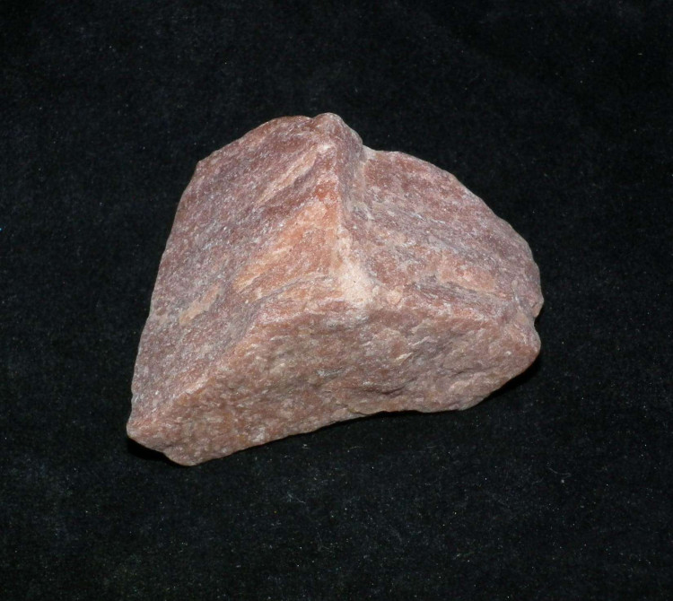
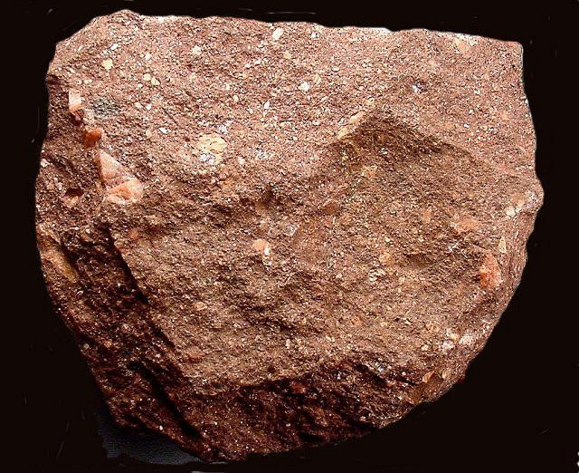
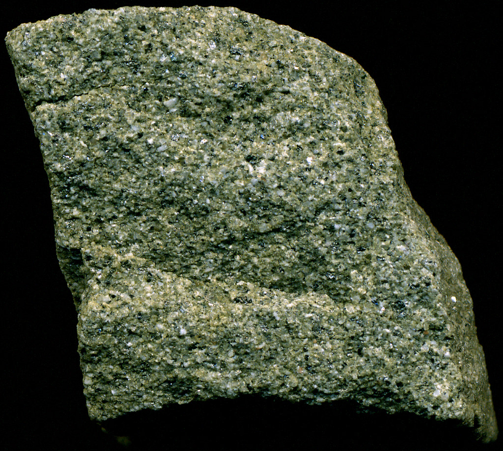
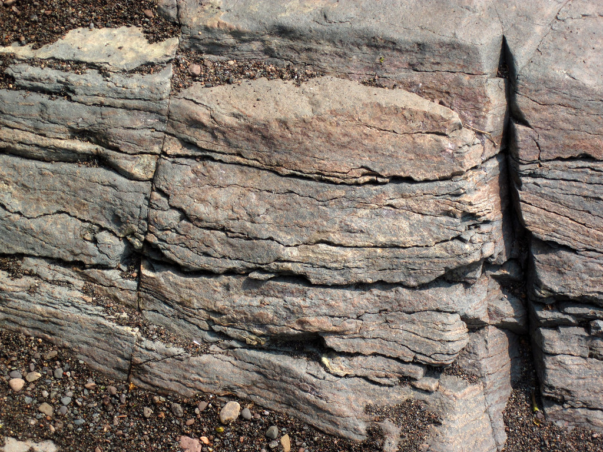
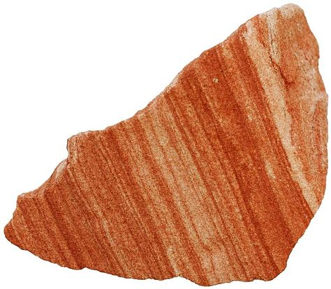
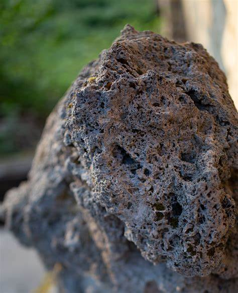
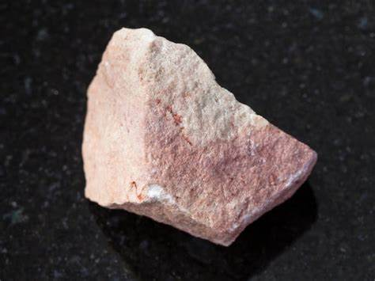

Sandstone: The Versatile Building Block of Earth
Chemical Formula: SiO₂ (Silicon Dioxide Quartz)
Color: Various (Beige, Red, Yellow, Brown, Grey)
Hardness: 6-7 on the Mohs scale
Crystal System: Clastic sedimentary rock
Localities: United States, India, Australia, South Africa, China
Common Uses: Building material, sculptures, paving, aquifers
Introduction to Sandstone
Sandstone is a sedimentary rock composed primarily of sand-sized mineral particles, mostly quartz. This rock forms through the compaction and cementation of sand particles over long geological periods, often in riverbeds, beaches, and deserts. The durability and abundance of sandstone have made it a cornerstone material for construction from ancient civilizations to modern architecture.
Known for its unique texture and color variations, sandstone is highly versatile, used in buildings, pavements, sculptures, and even as an aquifer in groundwater storage. Its aesthetic appeal and workability make it a favored material across the world.
Formation and Types of Sandstone
Sandstone forms as a result of the deposition, compaction, and cementation of sand grains. Over time, these particles, often sourced from quartz and feldspar, are bonded together by minerals like silica, calcite, or iron oxides, creating sandstone. The environment where sandstone forms, such as deserts, rivers, or oceans, can influence its appearance and composition.
Key Types of Sandstone:
1. Quartz Sandstone
Composed primarily of quartz grains, this type of sandstone is highly durable and resistant to chemical weathering.
2. Arkose Sandstone
Arkose is rich in feldspar minerals, often giving it a reddish or pinkish hue. This type of sandstone forms close to its source rock and is less weathered.
3. Graywacke
A variety of sandstone characterized by a mix of sand and clay, often dark grey to black. Graywacke forms in deep oceanic environments where rapid sedimentation occurs.
4. Lithic Sandstone
Composed of rock fragments and minerals other than quartz and feldspar, lithic sandstone often indicates a source from volcanic or metamorphic rocks.
Structure and Properties of Sandstone
Sandstone is a clastic sedimentary rock, meaning it is composed of fragments of other rocks or minerals. It typically has a granular texture with grains ranging from 0.06 to 2 mm in diameter. Sandstone's durability and color depend on its composition and the minerals binding the grains together.
- Hardness: Sandstone has a hardness of 6-7 on the Mohs scale, making it relatively durable for construction.
- Color: Sandstone colors vary widely based on the minerals present, ranging from beige and yellow to red, brown, and grey.
- Porosity: Sandstone is often porous, allowing it to hold water and making it an excellent aquifer in some regions.
- Texture: Sandstone can range from fine to coarse-grained depending on the size of the sand particles that form it.
Uses of Sandstone
Sandstone’s durability, abundance, and natural beauty make it an essential material in various industries. Its uses span from construction to art, horticulture, and even water filtration.
1. Construction Material
Throughout history, sandstone has been a fundamental building material. Its aesthetic appeal and workability make it a preferred choice for both structural and decorative elements in architecture.
Famous Sandstone Structures:
- The Red Fort in India, made from red sandstone, is an iconic historical building.
- The Houses of Parliament in London are another example of sandstone’s enduring use in monumental architecture.
- In the United States, many public buildings, including parts of the U.S. Capitol, feature sandstone facades.
2. Sculpture and Decorative Use
Sandstone's workability allows artisans to create intricate sculptures and ornamental pieces. Its range of colors adds to its appeal for decorative purposes.
Historical Examples:
- Many ancient Egyptian temples and tombs, such as those at Karnak, were constructed and adorned with sandstone carvings.
- Indigenous cultures in Australia used sandstone for rock art and tools due to its abundance and ease of working.
3. Aquifers and Water Filtration
The porous nature of sandstone makes it an excellent natural reservoir for groundwater. It acts as an aquifer, storing and filtering water for use in agriculture and drinking supplies.
- Groundwater Storage: Sandstone aquifers are found in regions like the Great Artesian Basin in Australia, where they supply water for agricultural and urban needs.
Unusual Varieties of Sandstone
While most sandstone types share common characteristics, certain unusual varieties stand out due to unique mineral compositions or textures.
1. Rainbow Sandstone
Found in areas like Arizona (USA), rainbow sandstone displays striking multi-colored layers of reds, yellows, and purples. It’s used decoratively in tiles and sculptures.
2. Tufa Sandstone
Tufa is a highly porous variety of sandstone formed by the precipitation of calcium carbonate from water. It is often used in gardens and landscaping for its lightweight and absorbent qualities.
3. Calcareous Sandstone
This variety contains a significant amount of calcite, giving it a lighter color and softer texture. Calcareous sandstone is more prone to weathering but is valued for its aesthetic appeal.
Sourcing Locations of Sandstone
Sandstone is found worldwide, particularly in areas with abundant sand deposits and historical sedimentation environments.
- United States: Sandstone is quarried in states like Colorado, Arizona, and Ohio where it is used for both construction and decorative purposes.
- India: India is one of the largest exporters of sandstone, particularly red and yellow varieties. Regions like Rajasthan are known for their high-quality sandstone used globally in architecture and monuments.
- Australia: Australia’s desert regions, such as the Northern Territory and Queensland, are rich in sandstone deposits. The stone from these areas is often used in both domestic and international construction projects.
- South Africa: South Africa’s Cape region is home to some of the oldest and most durable sandstone quarries, often used in paving and monuments.
Exploration and Mining of Sandstone
Sandstone exploration and mining focus on locating high-quality deposits and extracting the rock for industrial use.
Exploration
Geological surveys, including mapping and sampling, help locate sandstone deposits. Remote sensing and aerial photography can also aid in identifying potential quarry sites, particularly in desert regions where the stone is exposed at the surface.
Mining Methods
Sandstone is primarily mined using open-pit quarrying. The stone is extracted in blocks, which are then cut and shaped into slabs, tiles, or other forms depending on the application.
Processing
After quarrying, sandstone is typically cut and polished for use in construction, decoration, or paving. Some varieties are also crushed into gravel for road construction or ground into sand for industrial applications.
Metaphysical Properties of Sandstone
In addition to its practical uses, sandstone is often associated with various metaphysical properties.
- Stability and Grounding: Sandstone is believed to provide stability and grounding, connecting individuals to the earth and promoting calmness and balance.
- Creativity and Insight: Sandstone is said to foster creativity, aiding in artistic endeavors by encouraging free thinking and self-expression.
- Protection: In some cultures, sandstone is believed to offer protection, particularly in safeguarding homes and communities. It is thought to block negative energies and provide a calming influence.
Famous Finds and Sandstone
Throughout history, sandstone has been used in many iconic structures and artifacts.
- Petra (Jordan): The ancient city of Petra is carved directly into sandstone cliffs. Its rose-colored facades have become symbolic of the region’s geological and historical significance.
- Uluru (Australia): Also known as Ayers Rock, Uluru is a massive sandstone formation in Australia’s Northern Territory. This sacred site for Indigenous Australians is world-renowned for its size and cultural significance.
- Antelope Canyon (USA): Located in Arizona, Antelope Canyon is a slot canyon formed by the erosion of Navajo sandstone. Its narrow passageways and smooth, curving walls make it a popular destination for photography and tourism.
Caring for Sandstone
While durable, sandstone requires regular care and maintenance to prevent weathering and damage, particularly when used in outdoor structures or as decorative stone.
- Cleaning: Use a mild detergent and soft brush to clean sandstone surfaces. Avoid acidic or abrasive cleaners, which can erode the stone’s surface.
- Sealing: Outdoor sandstone should be sealed with a weatherproof sealant to protect it from moisture absorption, which can cause cracking or discoloration over time.
- Handling: Handle sandstone with care to avoid chipping or scratching its surface, particularly in decorative applications. Proper installation and support are crucial for structural uses.
Conclusion
Sandstone, with its versatility, aesthetic appeal, and historical significance, continues to be a material of choice for architects, artists, and geologists alike. Its abundance and durability have made it an integral part of human civilization, from ancient monuments to modern skyscrapers. Whether as a building block, a decorative stone, or a spiritual tool, sandstone's legacy is as enduring as the rock itself.